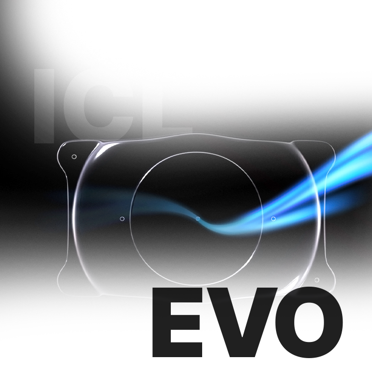
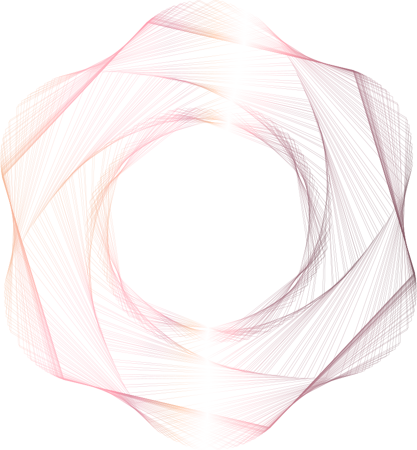
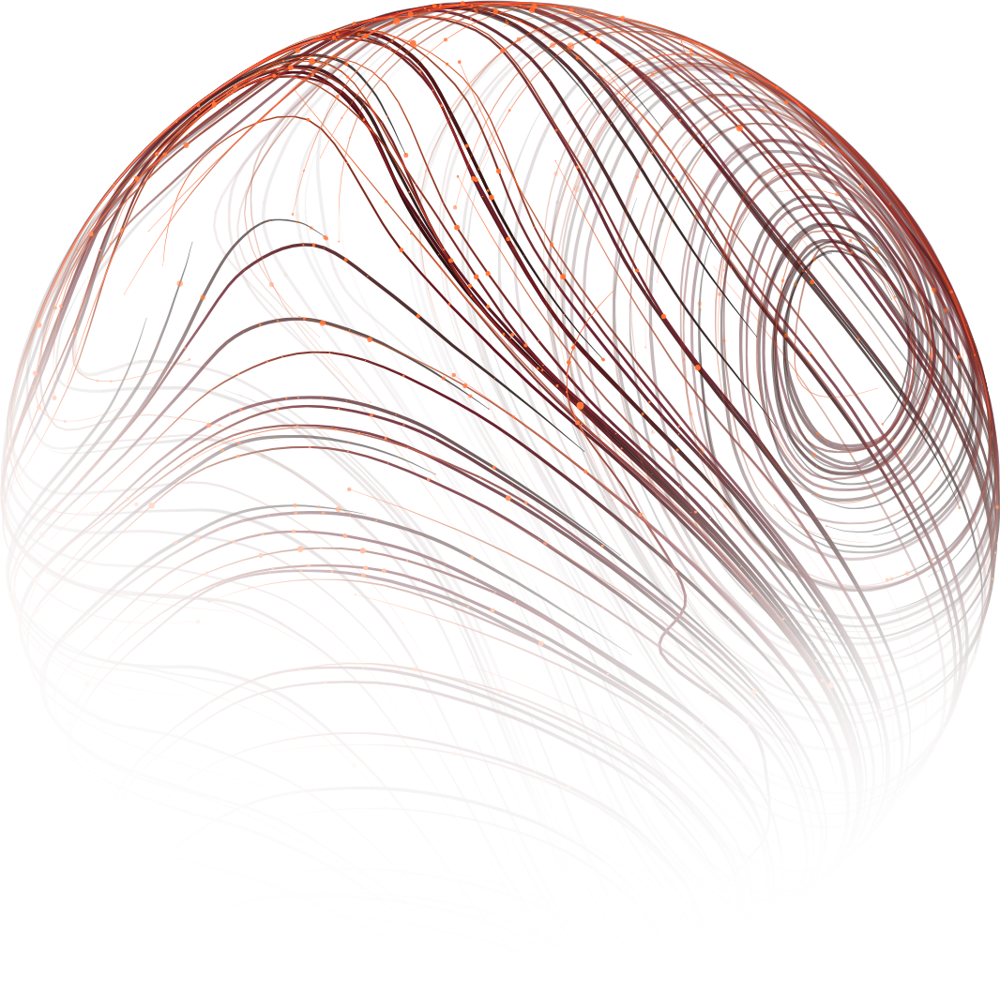
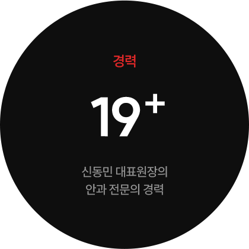
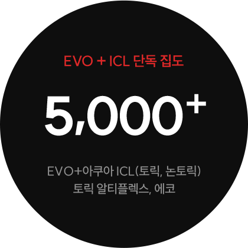
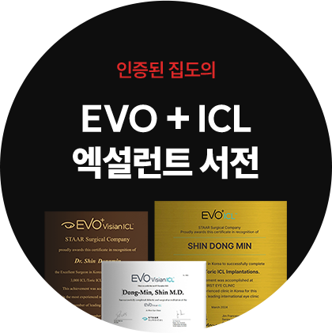

어차피 깎아낸 각막은 평생 되돌릴 수 없습니다.
소중한 눈을 위해 처음부터 안전한 ICL이 정답입니다.

어차피 깎아낸 각막은 평생 되돌릴 수 없습니다.
소중한 눈을 위해 처음부터 안전한 ICL이 정답입니다.
깎아버린 각막은
결코 되돌릴 수 없습니다.
매년 수십만 명이 레이저 시력교정술을 받지만,
그들 중 누구도 10년, 20년 뒤의 부작용 가능성에서
자유롭지 못합니다.
원인 모를 안구건조증으로 매일 인공눈물을 달고 살거나,
시간이 지나 다시 시력이 떨어지는 ‘근시 퇴행’이 왔을 때,
이미 깎아버린 각막은 절대 다시 재생되지 않습니다.
재수술을 하고 싶어도 잔여 각막이 부족해 안경을 다시 써야 하는
좌절감을 마주하게 될지도 모릅니다.
내 소중한 눈에 칼을 대고
레이저로 태워버리는 수술,
정말 대안이 없을까요?
있습니다.
각막을 단 1%도
손상시키지 않는
단 하나의 프리미엄

바로
안내렌즈삽입술(ICL)
입니다.
안내렌즈삽입술(ICL),
무엇이 특별할까요?
"수술이 잘못되면 어쩌죠?" ICL은 언제든
'원상복구'가 가능한 유일한 시력교정술입니다.
라식·라섹은 각막을 깎아내는 되돌릴 수 없는 수술이지만,
ICL은 각막을 온전히 보존합니다.
만약 미래에 시력이 변하거나 예상치 못한
안질환이 발생하더라도, 삽입한 렌즈만 제거하면
수술 전의 건강한 안구 상태로 완벽하게 되돌아갈 수 있습니다.
빛 번짐 및 안구건조증의 굴레에서 벗어나십시오.
레이저 수술과 달리 ICL은 각막 중심부를 깎지 않고 주변부에
2~3mm 미세 절개창만 내어 수술합니다. 각막 신경이 그대로 보존되어
안구건조증을 유발하지 않으며, 각막 혼탁이나 구면수차가 없어
야간에도 번짐 없는 선명한 HD급 시야를 보장합니다.
안과 의사가

의사에게
또
가족에게
ICL 제조사인 STAAR Surgical의 공식 집계에 따르면,
"전 세계에서 ICL 수술을 집도하는 안과 의사 중 수백 명 이상이
본인 눈에 직접 ICL 수술을 받았거나,
자신의 직계 가족에게 이 수술을 직접 집도했다"는
공식 인증 데이터(Surgeon-Patient Registry)가 있습니다.
또한 해당 서베이에서 ICL 전문의의 90% 이상이
"가족이나 지인에게 시력교정술로 ICL을 적극 추천하겠다"고
응답한 결과도 확인된 바 있습니다.
50대,
60대가 되어도 안심,
당신의 먼 미래까지
계산합니다.

비용 그 이상의 가치
비싸지 않나?
평생을 따져보면
가장 경제적입니다.
레이저 수술 후
근시 퇴행이 오거나 심한 건조증으로
안과를 전전하며 쓰는 비용과
스트레스를 감안한다면,
라식·라섹은 레이저 장비가 하지만,
ICL은 100% 의사의 ‘손’끝에서
결정됩니다.
ICL은 각막을 온전한 상태(순정 상태)로 보존하기 때문에,
수십 년 뒤 노안이나 백내장 수술을 받게 되더라도
아무런 오차 없이 완벽하고 정확한 치료를
플래닝할 수 있습니다.
20대부터 80대까지, 평생의 눈 건강을 지키는
가장 현명한 투자입니다.
장비가 상향 평준화된 시대에, ICL의 결과와
안전성을 결정짓는 유일한 변수는
오직 하나 — 당신이 선택한 ‘집도의의 숙련도’뿐입니다.
본원은 단 한 건의 수술도
페이 닥터나 연차가 낮은 의료진에게 맡기지 않습니다.
수천례 이상의 안내렌즈삽입술을 성공적으로 집도하며
안구 내부 구조를 현미경 보듯 꿰뚫고 있는 ‘ICL 엑설런트 서전'이
검사 데이터 분석부터 수술 집도, 사후 관리까지
전 과정을 1:1로 전담합니다.

19년 경력의 노하우와 7,000례 이상의 임상 데이터를 바탕으로
0.1mm의 오차까지 계산합니다.
의사를 가르치는 의사, 신동민 원장이 상담부터 수술까지
직접 집도하여 더욱 안전하고 차원이 다른 시력의 질을
약속드립니다.


